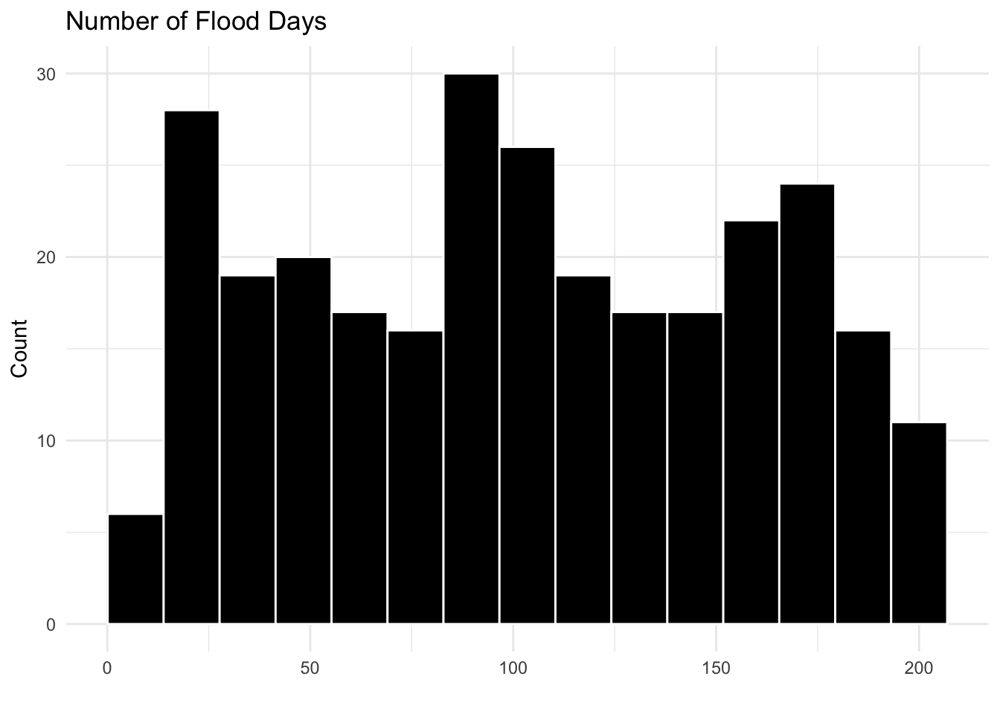
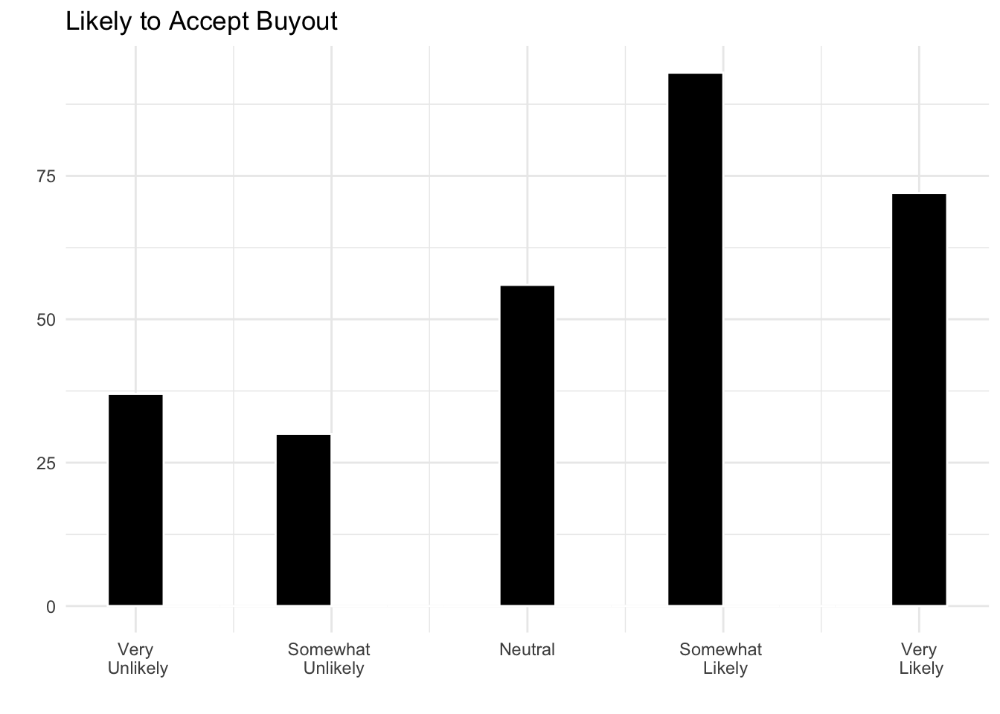

| Step | N |
|---|---|
| Survey records | 558 |
| Excluding records flagged as spam | 557 |
| Provided a ZIP code | 471 |
| ZIP code matched to a South Carolina county | 471 |
| Complete on all model variables (support models) | 407 |
| Homeowners complete on all model variables (accept model) | 288 |
Supplemental Materials
Who Supports Managed Retreat? Flood Experience, Local Government Performance, and Public Opinion on Property Buyouts
Survey Questions
Flood Perceptions
On a scale of 0 to 10, with 0 being not at all concerned and 10 being extremely concerned, how concerned are you about flooding in your local area
In your personal experience, over the past few years has flooding where you live been more frequent, less frequent, or stayed about the same as in previous years?
- Less frequent
- Stayed about the same
- More frequent
Have you ever lived in a home/apartment that was flooded by water from outside the home? Please select all that apply.
- No
- Within the last year (2022)
- Last 2-5 years (2017-2021)
- Last 6-10 years (2012-2016)
- Last 10-20 years (2002-2012)
- More than 20 years ago (2001 or earlier)
Recoded to No = 0, all else = 1
Community Resilience
Using a scale from one to seven, where one means you strongly disagree and seven means you strongly agree, please respond to the following statements about your community, including your neighborhood or immediate surrounding area. Randomized
- This community tries to prevent disasters
- This community actively prepares for future disasters
- This community can provide emergency services during a disaster
- This community has services and programs to help people after a disaster
Infrastructure Satisfaction
On average, how satisfied are you with the overall job of local government in providing services in your community?
- Very dissatisfied (1)
- Somewhat dissatisfied (2)
- Neutral (3)
- Somewhat satisfied (4)
- Very satisfied (5)
On average, how satisfied are you with the quality of drinking water services in your community?
- Very dissatisfied (1)
- Somewhat dissatisfied (2)
- Neutral (3)
- Somewhat satisfied (4)
- Very satisfied (5)
On average, how satisfied are you with the conditions of the roads and streets in your community?
- Very dissatisfied (1)
- Somewhat dissatisfied (2)
- Neutral (3)
- Somewhat satisfied (4)
- Very satisfied (5)
On average, how satisfied are you with the reliability of [sewer/septic] services in your community?
- Very dissatisfied (1)
- Somewhat dissatisfied (2)
- Neutral (3)
- Somewhat satisfied (4)
- Very satisfied (5)
Place Attachment
How long have you lived at your current address?
- Less than 1 year
- 1-5 years
- 6-10 years
- 11+ years
How long have you lived in the area (within about 25 miles of your current residence)?
- Same as current address
- Less than 1 year
- 1-5 years
- 6-10 years
- 11+ years
Respondents selecting “Same as current address” were assigned their time at their current address
Sample Accounting and Representativeness
Table S1: Sample Accounting
Table S2: Sample Compared to South Carolina Adults (%)
| Characteristic | Sample | Weighted Sample | ACS 2024 |
|---|---|---|---|
| ACS 2024 one-year estimates for South Carolina adults age 18 and older. Weights are raked on sex, age, race, and education. | |||
| Male | 49.5 | 47.9 | 48.0 |
| Age 18-34 | 27.1 | 27.5 | 27.5 |
| Age 35-54 | 34.5 | 31.3 | 31.3 |
| Age 55-64 | 16.4 | 16.2 | 16.2 |
| Age 65+ | 22.0 | 25.0 | 25.0 |
| White | 67.9 | 65.5 | 65.5 |
| Less than high school | 3.6 | 9.4 | 9.4 |
| High school/GED | 26.8 | 29.2 | 29.2 |
| Some college/associate's | 39.1 | 30.7 | 30.7 |
| Bachelor's degree | 18.9 | 19.1 | 19.1 |
| Graduate degree | 11.7 | 11.6 | 11.6 |
Robustness Checks
Table S3: Correlations among Community, Social Capital, and Residence Measures
| Measure | (1) | (2) | (3) | (4) | (5) | (6) |
|---|---|---|---|---|---|---|
| (1) Perceived Community Resilience | 1.00 | 0.41 | 0.46 | 0.34 | 0.13 | 0.13 |
| (2) Infrastructure Satisfaction | 0.41 | 1.00 | 0.27 | 0.26 | 0.11 | 0.03 |
| (3) Bridging Social Capital | 0.46 | 0.27 | 1.00 | 0.61 | 0.02 | 0.02 |
| (4) Bonding Social Capital | 0.34 | 0.26 | 0.61 | 1.00 | 0.06 | 0.05 |
| (5) Time at Current Address | 0.13 | 0.11 | 0.02 | 0.06 | 1.00 | 0.70 |
| (6) Time in Local Area | 0.13 | 0.03 | 0.02 | 0.05 | 0.70 | 1.00 |
Table S4: Robustness Checks for Support for a Property Buyout Program
| Weighted | Ordered logit | Resilience only | Infrastructure only | Bridging only | Self-reported coastal | |
|---|---|---|---|---|---|---|
| County-clustered standard errors in parentheses, except the ordered logit model. Ordered logit cutpoints and constants not shown. | ||||||
| Flooding Concern | 0.042 (0.031) | 0.058+ (0.032) | 0.049+ (0.028) | 0.062* (0.026) | 0.059* (0.027) | 0.047+ (0.028) |
| Flood Experience | 0.624** (0.226) | 0.539** (0.207) | 0.577** (0.220) | 0.566** (0.202) | 0.517** (0.195) | 0.552* (0.217) |
| Flooding Increase | 0.161 (0.175) | 0.194 (0.169) | 0.160 (0.175) | 0.169 (0.181) | 0.096 (0.158) | 0.193 (0.180) |
| Coastal County | 0.630** (0.206) | 0.544* (0.244) | 0.485* (0.199) | 0.676** (0.212) | 0.678*** (0.186) | |
| Coastal County (self-reported) | 0.555* (0.226) | |||||
| County Riverine Flood Risk | -0.003 (0.003) | -0.002 (0.004) | -0.002 (0.003) | -0.001 (0.004) | -0.001 (0.003) | -0.001 (0.003) |
| Perceived Community Resilience | 0.233* (0.107) | 0.339*** (0.088) | 0.355*** (0.102) | 0.257* (0.102) | ||
| Infrastructure Satisfaction | 0.342* (0.141) | 0.310* (0.131) | 0.457** (0.159) | 0.279+ (0.153) | ||
| Bridging Social Capital | 0.194 (0.161) | 0.115 (0.184) | 0.470** (0.157) | 0.169 (0.145) | ||
| Bonding Social Capital | -0.055 (0.211) | -0.091 (0.184) | 0.035 (0.185) | 0.130 (0.183) | -0.027 (0.192) | -0.101 (0.198) |
| Own Home | 0.045 (0.196) | 0.102 (0.218) | 0.228 (0.190) | 0.068 (0.213) | 0.213 (0.194) | 0.137 (0.214) |
| Time at Current Address | 0.025 (0.126) | 0.021 (0.131) | 0.020 (0.110) | 0.034 (0.108) | 0.059 (0.119) | 0.005 (0.116) |
| Time in Local Area | -0.300* (0.120) | -0.288* (0.131) | -0.272** (0.104) | -0.214+ (0.109) | -0.252* (0.116) | -0.238* (0.107) |
| Ideology (more conservative) | -0.152* (0.064) | -0.185** (0.060) | -0.176** (0.062) | -0.168** (0.061) | -0.184** (0.065) | -0.160** (0.058) |
| Age | -0.002 (0.005) | -0.004 (0.006) | -0.003 (0.005) | -0.006 (0.004) | -0.000 (0.005) | -0.002 (0.005) |
| Gender (male=1) | 0.151 (0.236) | 0.313 (0.194) | 0.368+ (0.195) | 0.229 (0.209) | 0.284 (0.215) | 0.271 (0.205) |
| Race (white=1) | 0.313 (0.229) | 0.273 (0.226) | 0.287 (0.244) | 0.322 (0.239) | 0.358 (0.270) | 0.357 (0.238) |
| Education | 0.073 (0.064) | 0.077 (0.062) | 0.062 (0.057) | 0.058 (0.063) | 0.029 (0.065) | 0.057 (0.059) |
| Income | -0.118* (0.057) | -0.100+ (0.061) | -0.107+ (0.057) | -0.110+ (0.058) | -0.104+ (0.059) | -0.106+ (0.056) |
| N | 407 | 407 | 407 | 407 | 407 | 407 |
| R2 | 0.23 | 0.22 | 0.21 | 0.19 | 0.24 | |
Table S5: Alternative Measures of Flood Experience and Exposure
| Flood recency | More frequent flooding | Past-year exposure | Excluding speeders | |
|---|---|---|---|---|
| County-clustered standard errors in parentheses. Speeders completed the survey in less than one-third of the median time. | ||||
| Flooding Concern | 0.058* (0.028) | 0.048 (0.029) | 0.045 (0.027) | 0.047 (0.029) |
| Flood Experience | 0.551** (0.202) | 0.457* (0.231) | 0.622** (0.219) | |
| Flooding Increase | 0.150 (0.188) | 0.143 (0.195) | 0.229 (0.192) | |
| Flood within ~5 Years | 1.152*** (0.264) | |||
| Flood More than ~5 Years Ago | 0.079 (0.222) | |||
| Flooding More Frequent (dummy) | 0.348 (0.367) | |||
| Past-Year Flood Disruption | 0.090 (0.120) | |||
| Past-Year Flood Safety Risk | 0.083 (0.102) | |||
| Coastal County | 0.453* (0.199) | 0.523* (0.202) | 0.513** (0.198) | 0.558** (0.193) |
| County Riverine Flood Risk | -0.002 (0.003) | -0.002 (0.003) | -0.002 (0.003) | -0.003 (0.003) |
| Perceived Community Resilience | 0.242* (0.098) | 0.256* (0.100) | 0.255* (0.103) | 0.278** (0.103) |
| Infrastructure Satisfaction | 0.260+ (0.151) | 0.294+ (0.158) | 0.306* (0.150) | 0.236 (0.149) |
| Bridging Social Capital | 0.139 (0.143) | 0.191 (0.150) | 0.152 (0.148) | 0.176 (0.151) |
| Bonding Social Capital | -0.071 (0.195) | -0.093 (0.200) | -0.109 (0.202) | -0.063 (0.205) |
| Own Home | 0.115 (0.208) | 0.142 (0.204) | 0.162 (0.216) | 0.114 (0.215) |
| Time at Current Address | -0.006 (0.112) | 0.025 (0.115) | -0.008 (0.117) | 0.027 (0.116) |
| Time in Local Area | -0.205* (0.096) | -0.264* (0.112) | -0.239* (0.104) | -0.255* (0.109) |
| Ideology (more conservative) | -0.171** (0.055) | -0.169** (0.061) | -0.165** (0.058) | -0.165** (0.060) |
| Age | 0.000 (0.005) | -0.003 (0.004) | -0.001 (0.005) | -0.003 (0.004) |
| Gender (male=1) | 0.290 (0.207) | 0.266 (0.210) | 0.234 (0.209) | 0.309 (0.220) |
| Race (white=1) | 0.360 (0.233) | 0.362 (0.233) | 0.354 (0.240) | 0.363 (0.231) |
| Education | 0.060 (0.059) | 0.059 (0.059) | 0.062 (0.061) | 0.064 (0.060) |
| Income | -0.103+ (0.057) | -0.113+ (0.057) | -0.107+ (0.057) | -0.103+ (0.055) |
| N | 407 | 407 | 407 | 394 |
| R2 | 0.26 | 0.24 | 0.24 | 0.24 |
Table S6: Exploratory Factor Analysis of Social Capital Items (Oblimin Rotation)
| Item | Bonding | Bridging |
|---|---|---|
| Maximum likelihood factor analysis with two factors. Factor correlation = 0.56. | ||
| Bonding: friends in community | 0.17 | 0.29 |
| Bonding: old classmates in contact | -0.09 | 0.43 |
| Bonding: coworkers trusted | 0.56 | 0.10 |
| Bonding: relatives trusted | 0.63 | -0.08 |
| Bonding: ties with broad connections | 0.57 | 0.05 |
| Bonding: ties with professional jobs | 0.57 | -0.04 |
| Bonding: coworkers who would help | 0.72 | 0.04 |
| Bonding: friends who would help | 0.75 | 0.00 |
| Bridging: cultural/religious groups | 0.29 | 0.34 |
| Bridging: governmental/political groups | 0.23 | 0.48 |
| Bridging: groups with broad connections | 0.24 | 0.51 |
| Bridging: groups with influence | 0.09 | 0.67 |
| Bridging: cultural groups represent me | -0.02 | 0.76 |
| Bridging: governmental groups represent me | -0.11 | 0.85 |
| Bridging: cultural groups would help | 0.15 | 0.62 |
| Bridging: governmental groups would help | -0.03 | 0.70 |
Supplementary Analysis: Homeowners’ Willingness to Accept a Buyout
In addition to support for a buyout program, the survey included an exploratory experiment on homeowners’ willingness to accept a buyout. Respondents were presented with a randomly generated number of hypothetical days of disruptive flooding events in their community in a year, and homeowners were then asked how likely they would be to accept a buyout of their home.
Imagine that over the next few years, disruptive flooding events begin to occur in your community [5-200] days a year.
With the above number of disruptive flooding days per year, how likely would you be to accept a property buyout of your home?
The likelihood to accept was measured on a 1 (very unlikely) to 5 (very likely) scale, with a mean of 3.46 among the 288 homeowners with complete data. The number of flood days was drawn from a uniform distribution, and so the median respondent was assigned 99 days, and few respondents were assigned a number of days that is realistic for most communities. As shown in Figure S1, willingness to accept a buyout was high across the range of flood days. Among homeowners assigned the lowest quartile of flood days, 53% were somewhat or very likely to accept a buyout, compared to 54% among those assigned the highest quartile.
Figure S1: Histograms of Number of Flood Days and Likelihood of Accepting Buyout


The OLS results are presented in Table S7. The relationship between the number of flood days and willingness to accept a buyout is positive, but it is not significant in the bivariate model and is only marginally significant in the full model. In the full model, an increase of 100 flood days is associated with a 0.19 increase in willingness to accept (95% CI -0.01 to 0.38). Because the number of flood days was randomized, baseline support for a buyout program, which was measured before the experiment, can be included as a pre-treatment covariate to improve the precision of the estimate without biasing it. When baseline support is included, an increase of 100 flood days is associated with a 0.24 increase in willingness to accept (95% CI 0.04 to 0.44). As such, there is some evidence of a modest positive relationship, though this specification was not preregistered and should be interpreted with caution. Additionally, willingness to accept was high across conditions, which suggests that the threshold at which homeowners would consider a buyout likely sits below the range of flood days we presented. Future research should use a lower and more realistic range of flood days.
Table S7: OLS Analysis of Homeowners’ Willingness to Accept a Buyout
| Bivariate | Full | Full + baseline support | |
|---|---|---|---|
| County-clustered standard errors in parentheses. Homeowners only. | |||
| Flood Days (100s) | 0.115 (0.108) | 0.185+ (0.097) | 0.239* (0.101) |
| Baseline Support for Buyout Program | 0.348*** (0.034) | ||
| Flooding Concern | 0.029 (0.028) | 0.031 (0.028) | |
| Flood Experience | 0.106 (0.129) | -0.189 (0.126) | |
| Flooding Increase | 0.085 (0.125) | -0.014 (0.136) | |
| Coastal County | 0.181 (0.206) | 0.015 (0.200) | |
| County Riverine Flood Risk | 0.002 (0.004) | 0.003 (0.004) | |
| Perceived Community Resilience | 0.055 (0.083) | -0.032 (0.071) | |
| Infrastructure Satisfaction | 0.221 (0.137) | 0.131 (0.110) | |
| Bridging Social Capital | 0.067 (0.184) | -0.026 (0.158) | |
| Bonding Social Capital | 0.020 (0.157) | 0.074 (0.145) | |
| Time at Current Address | -0.005 (0.105) | -0.064 (0.089) | |
| Time in Local Area | -0.186 (0.114) | -0.042 (0.105) | |
| Ideology (more conservative) | -0.023 (0.052) | 0.043 (0.043) | |
| Age | -0.002 (0.004) | -0.002 (0.004) | |
| Gender (male=1) | 0.200 (0.153) | 0.055 (0.142) | |
| Race (white=1) | -0.003 (0.190) | -0.138 (0.141) | |
| Education | 0.089 (0.070) | 0.062 (0.051) | |
| Income | -0.082 (0.058) | -0.046 (0.050) | |
| Constant | 3.343*** (0.130) | 2.043** (0.770) | 1.206* (0.537) |
| N | 288 | 288 | 288 |
| R2 | 0.00 | 0.12 | 0.30 |
Social Capital: Bonding
This next set of questions asks you about your social relationships within your local community.
How do you rate the number of your friends within your local community? Would you say that you have a few, less than average, average, more than average, or a lot of friends?
How do you rate the number of your old classmates in your local community with which you are still in contact? Would you say that you keep in touch with a few, less than average, average, more than average, or a lot?
Among your coworkers, how many you can trust?
Among your relatives, how many you can trust?
Among all your relatives, neighbors, friends, co-workers, and classmates within your local community, how many have broad connections with others?
Among all your family members, relatives, neighbors, friends, co-workers, and old classmates within your local community, how many hold a professional job?
How many of your coworkers will definitely help you upon your request?
How many of your friends within your local community will definitely help you upon your request?